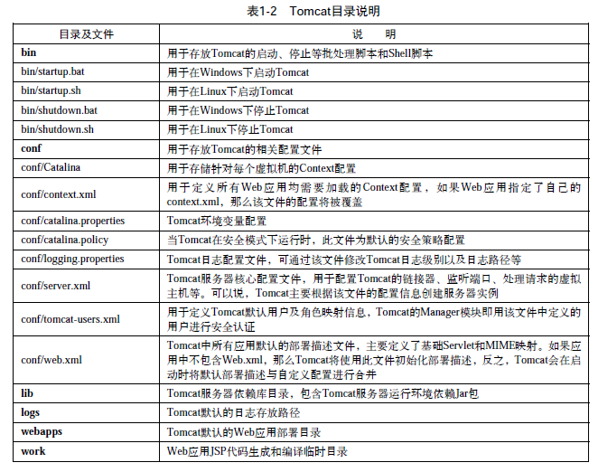
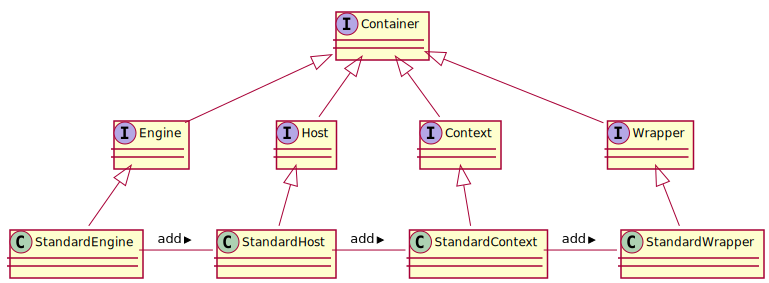
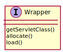
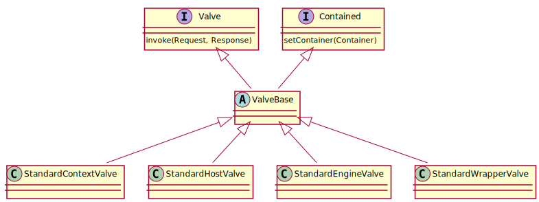
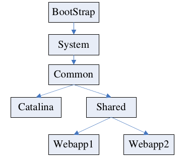
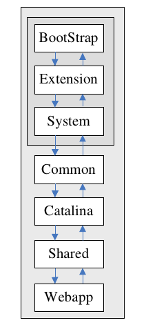
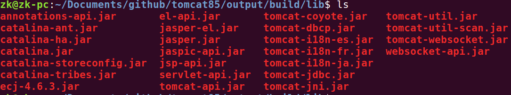

Tomcat
目录说明:

启动 启动 tomcat 有两种方式：
双击 bin/startup.sh
运行 bin/catalina.sh run
它们对应于 Bootstrap 与 Catalina 两个类，我们现在只关心 Catalina 这个类，这个类使用 Apache Digester 解析 conf/server.xml 文件生成 tomcat 组件，然后再调用 Embedded类的 start 方法启动 tomcat。
所以，集成 Tomcat 的方式就有以下两种了：
沿用 tomcat 自身的 server.xml
自己定义一个 xml 格式来配置 tocmat 的各参数，自己再写解析这段 xml，然后使用 tomcat 提供的 API 根据这些 xml 来生成 Tomcat 组件，最后调用 Embedded 类的 start 方法启动 tomcat
Bootstrap 初始化 :
创建三种类型的加载器:
1 2 3 createClassLoader("common" , null ); catalinaLoader = createClassLoader("server" , commonLoader); sharedLoader = createClassLoader("shared" , commonLoader);
Bootstrap main 执行命令 :
1 2 3 4 5 6 7 8 9 if (command.equals("startd" )) { daemon.start(); } else if (command.equals("stopd" )) { daemon.stop(); } else if (command.equals("start" )) { daemon.start(); } else if (command.equals("stop" )) { daemon.stopServer(args); }
Catalina 初始化 :
1 2 3 getServer().setCatalina(this ); getServer().setCatalinaHome(Bootstrap.getCatalinaHomeFile()); getServer().setCatalinaBase(Bootstrap.getCatalinaBaseFile());
Catalina 装配容器 :
1 2 3 4 5 6 7 8 9 10 11 12 13 14 15 16 17 18 19 20 21 22 23 24 25 26 27 28 29 30 digester.addObjectCreate("Server" , "org.apache.catalina.core.StandardServer" , "className" ); digester.addSetProperties("Server" ); digester.addSetNext("Server" , "setServer" , "org.apache.catalina.Server" ); digester.addObjectCreate("Server/Service" , "org.apache.catalina.core.StandardService" , "className" ); digester.addSetProperties("Server/Service" ); digester.addSetNext("Server/Service" , "addService" , "org.apache.catalina.Service" ); digester.addObjectCreate("Server/Service/Executor" , "org.apache.catalina.core.StandardThreadExecutor" , "className" ); digester.addSetProperties("Server/Service/Executor" ); digester.addSetNext("Server/Service/Executor" , "addExecutor" , "org.apache.catalina.Executor" ); getServer().init();
Catalina 在 start() 中启动 Server :
1 2 shutdownHook = new CatalinaShutdownHook(); Runtime.getRuntime().addShutdownHook(shutdownHook);
Catalina 在 stop() 删除容器 :
1 2 3 Runtime.getRuntime().removeShutdownHook(shutdownHook); Server s = getServer(); s.stop();
在 stopServer中 停止 Catalina 服务 :
1 2 3 4 5 6 7 8 try (Socket socket = new Socket(s.getAddress(), s.getPort()); OutputStream stream = socket.getOutputStream()) { String shutdown = s.getShutdown(); for (int i = 0 ; i < shutdown.length(); i++) { stream.write(shutdown.charAt(i)); } stream.flush(); }
核心类
org.apache.catalina.Lifecyclestart(), stop(), destroy() 等org.apache.catalina.LifecycleListener
容器为了实现自己的功能经常要绑定一些其他组件,这些组件的功能可能被共享,也可以被单独定制,下面是被使用的组件:
LoaderClassLoader,加载 Java Classes;LoggerServletContext 的 log 方法,用于记录日志;ManagerSession 池;RealmResourcesorg.apache.catalina.ContainerListener
容器 容器是用来处理请求 servlet 资源，并为客户端填充 response 对象的模块。 Tomcat 共有四种类型的容器:
Engine: 整个 Catalina Servlet 引擎Host: 表示包含有一个或者多个 Context 容器的虚拟主机Context: 表示一个 Web 应用程序，一个 Context 可以有多个 WrapperWrapper: 表示一个独立的 Servlet

Wrapper 
Wrapper 中的 allocate() 方法会分配一个已经初始化的 servlet 实例，load() 方法载入并初始化 Servlet 类。
Server Server 的实现类: org.apache.catalina.core.StandardServer.java
Server
读取资源 :
1 2 globalNamingResources = new NamingResourcesImpl(); globalNamingResources.setContainer(this );
初始化 :
1 2 3 4 5 6 7 @Override protected void initInternal () throws LifecycleException super .initInternal(); for (int i = 0 ; i < services.length; i++) { services[i].init(); } }
启动所有 Service :
在 Tomcat 中，组件的生命周期是通过 Lifecycle 接口来控制的，即父组件控制子组件的生命周期。如 StandardServer 启动多个 Service:
1 2 3 4 5 6 7 8 9 10 11 12 13 14 15 @Override protected void startInternal () throws LifecycleException fireLifecycleEvent(CONFIGURE_START_EVENT, null ); setState(LifecycleState.STARTING); globalNamingResources.start(); synchronized (servicesLock) { for (int i = 0 ; i < services.length; i++) { services[i].start(); } } }
即简单的循环启动所有 Service 组件的 start 方法。
服务阶段 :
启动一个线程，简历对本机上预定义的 shutdown 端口的 ServerSocket 对象的监听:
1 2 3 4 5 6 7 8 9 10 private String address = "localhost" ;private int port = 8005 ;@Override public void await () awaitSocket = new ServerSocket(port, 1 , InetAddress.getByName(address)); }
它循环监听该端口，一旦监听到该端口的字符串命令，就将该命令与配置的 shutdown 字符串进行对比，如果相同则终止当前的线程函数:
1 2 3 4 5 private String shutdown = "SHUTDOWN" ;boolean match = command.toString().equals(shutdown);if (match) { break ; }
关闭 :
当监听到关闭命令并执行关闭操作时，会调用 stop 函数执行关闭工作:
1 2 3 4 5 6 @Override protected void stopInternal () throws LifecycleException for (int i = 0 ; i < services.length; i++) { services[i].stop(); } }
Service Service 的实现 org.apache.catalina.core.StandardService:
1 2 3 4 public class StandardService extends LifecycleMBeanBase implements Service {}
初始化并启动 :
初始化 Engine、所有的 Executor、所有的 Connector:
1 2 3 4 5 6 7 8 9 10 11 12 13 14 15 16 17 18 19 20 21 22 23 @Override protected void initInternal () throws LifecycleException super .initInternal(); if (engine != null ) { engine.init(); } for (Executor executor : findExecutors()) { executor.init(); } mapperListener.init(); synchronized (connectorsLock) { for (Connector connector : connectors) { connector.init(); } } }
启动 Engine、所有的 Executor、所有的 Connector:
1 2 3 4 5 6 7 8 9 10 11 12 13 14 15 16 17 18 19 20 21 22 23 24 25 26 @Override protected void startInternal () throws LifecycleException setState(LifecycleState.STARTING); if (engine != null ) { synchronized (engine) { engine.start(); } } synchronized (executors) { for (Executor executor: executors) { executor.start(); } } mapperListener.start(); synchronized (connectorsLock) { for (Connector connector: connectors) { connector.start(); } } }
停止 :
先暂停所有的 Connector，停止 Engine，停止所有的 Connector，停止 mapperListener，停止所有的 Executor:
1 2 3 4 5 6 7 8 9 10 11 12 13 14 15 16 17 18 19 20 21 22 23 24 25 26 27 28 29 30 31 32 33 34 35 36 37 38 @Override protected void stopInternal () throws LifecycleException synchronized (connectorsLock) { for (Connector connector: connectors) { connector.pause(); } } setState(LifecycleState.STOPPING); if (engine != null ) { synchronized (engine) { engine.stop(); } } synchronized (connectorsLock) { for (Connector connector: connectors) { connector.stop(); } } if (mapperListener.getState() != LifecycleState.INITIALIZED) { mapperListener.stop(); } synchronized (executors) { for (Executor executor: executors) { executor.stop(); } } }
Connector Connector 组件负责接受浏览器发过来的 TCP 连接请求，创建一个 Request 和 Response 对方分别用于和请求端交换数据，然后会产生一个线程来处理这个请求并把产生的 Request 和 Response 对象传给处理这个请求的线程，处理这个请求的线程就是 Container 组件要做的事情了。
通常我们会用到两种 Connector,一种叫 http connector,用来传递 http 请求;另一种叫 AJP Connector,在整合 Apache 与 Tomcat 工作的时候, Apache 与 Tomcat 之间就是通过这个协议来互动的。 (Apache 与 Tomcat 的整合工作, 通常是为了让 Apache 获取静态资源，而让 Tomcat 来解析动态的 JSP 或者 Servlet 。 )
Connector 本身就是一个实现了 LifecycleMBeanBase 的类。
构造加载协议 :
1 2 Class<?> clazz = Class.forName(protocolHandlerClassName); p = (ProtocolHandler) clazz.getConstructor().newInstance();
启动 :
1 2 3 4 5 @Override protected void startInternal () throws LifecycleException setState(LifecycleState.STARTING); protocolHandler.start(); }
请求 :
在执行期间，连接器在接收到用户的请求时，会通过以下函数创建请求对象:
1 2 3 4 5 public Request createRequest () Request request = new Request(); request.setConnector(this ); return (request); }
该请求提交给 Engine 处理。
响应 :
当 Engine 返回处理结果给 Connector 时，它会创建一个响应对象:
1 2 3 4 5 public Response createResponse () Response response = new Response(); response.setConnector(this ); return (response); }
并将该对象返回给客户端。
关闭 :
1 2 3 4 5 @Override protected void stopInternal () throws LifecycleException setState(LifecycleState.STOPPING); protocolHandler.stop(); }
启动 Engine 当 HTTP Connector 把请求传递给顶级的容器 —— Engine 时, 我们的视线就应该移动到 Container 这个层面来了。在 Container 层,包含了 3 种容器: Engine、Host 和 Context。Engine 收到 Connector 传递过来的请求,经过处理后,将结果返回给 Service(Service 是通过 Connector 这个媒介和 Engine 互动的) 。
Engine 的实现类是 org.apache.catalina.core.StandardEngine。
构造、创建过滤阀 :
1 2 3 public StandardEngine () pipeline.setBasic(new StandardEngineValve()); }
启动 Host Engine 收到 Connector 传递过来的请求后,不会自己处理,而是交给合适的 Host 来处理。Host 在这里就是虚拟主机的意思,通常我们只会使用 “localhost” ,即本地主机来处理。
Host 的实现类是: org.apache.catalina.core.StandardHost
构造、创建过滤阀 :
1 2 3 public StandardHost () pipeline.setBasic(new StandardHostValve()); }
启动、初始化 :
1 2 3 4 5 6 7 8 @Override protected synchronized void startInternal () throws LifecycleException { String errorValve = getErrorReportValveClass(); Valve valve = (Valve) Class.forName(errorValve).getConstructor().newInstance(); getPipeline().addValve(valve); }
处理请求 :
代码可能不在这个类里面了
启动 Context Host 接到了从 Engine 传过来的请求后,也不会自己处理,而是交给合适的 Context 来处理,例如 http://127.0.0.1:8080/foo/index.jsp 和 http://127.0.1:8080/bar/index.jsp。前者交给 foo 这个 Context 处理,后者交给 bar 这个 Context 来处理。
Context 的实现类是: org.apache.catalina.core.StandardContext
1 2 3 public StandardContext () pipeline.setBasic(new StandardContextValve()); }
启动、初始化 :
1 2 3 4 5 6 7 8 9 10 11 12 13 14 15 16 17 18 19 20 21 22 23 24 25 26 27 28 29 30 31 32 33 34 35 36 37 38 39 40 41 42 43 44 45 46 47 48 49 50 51 52 53 54 55 56 57 58 59 60 61 62 63 64 65 66 67 68 69 70 71 72 73 74 75 76 77 78 79 80 81 82 @Override protected synchronized void startInternal () throws LifecycleException { setResources(new StandardRoot(this )); resourcesStart(); if (getLoader() == null ) { WebappLoader webappLoader = new WebappLoader(getParentClassLoader()); webappLoader.setDelegate(getDelegate()); setLoader(webappLoader); } if (cookieProcessor == null ) { cookieProcessor = new Rfc6265CookieProcessor(); } getCharsetMapper(); postWorkDirectory(); NamingContextListener ncl = new NamingContextListener(); ncl.setName(getNamingContextName()); ncl.setExceptionOnFailedWrite(getJndiExceptionOnFailedWrite()); addLifecycleListener(ncl); setNamingContextListener(ncl); ClassLoader oldCCL = bindThread(); Loader loader = getLoader(); ((Lifecycle) loader).start(); getLogger(); Realm realm = getRealmInternal(); ((Lifecycle) realm).start(); for (Container child : findChildren()) { if (!child.getState().isAvailable()) { child.start(); } } ((Lifecycle) pipeline).start(); if ( (getCluster() != null ) && distributable) { contextManager = getCluster().createManager(getName()); } else { contextManager = new StandardManager(); } if (contextManager != null ) { setManager(contextManager); } if (manager!=null && (getCluster() != null ) && distributable) { getCluster().registerManager(manager); } setInstanceManager( new DefaultInstanceManager(context, injectionMap, this , this .getClass().getClassLoader())); ((Lifecycle) manager).start(); super .threadStart(); }
加载组件
ManagerSessionLoggerLoaderContextValve“access_allow_vavle” ,当请求传递过来时,它会看这个请求是从哪个 IP 过来的,如果这个 IP 已经在黑名单中,请求就会被禁止掉。第二个阀门叫做 “default_access_valve” ,它会做例行的检查,如果通过检查,就把请求传递给当前容器的子容器。通过这种方式,请求在各个容器里面传递,最后抵达目的地。
跟 Valve 相关的类和概念有如下两个:
org.apache.catalina.Pipelineorg.apache.catalina.Valve

Tomcat 类加载器 对于某个网络程序所特有 的类和资源,这些未包装的类和资源放置在你的网络程序档案 /WEB-INF/classes 目录下面,或者,包含这些类和资源的 JAR 文件放置在你的网络程序档案 /WEB-INF/lib 目录下面;
对于必须被所有网络程序共享 的类和资源, 未包装的这些类和资源放置在 $CATALINA_HOME/shared/classes 下面,或者,包含这些类和资源的 JAR 文件放置在 $CATALINA_HOME/shared/lib 下面。
Tomcat 类加载器父子关系图 :

Tomcat 与 Java 类加载器关系图 :

catalina.sh 指定 CLASSPATH 内容 :
1 2 3 4 5 6 7 8 9 10 11 if [ ! -z "$CLASSPATH " ] ; then CLASSPATH="$CLASSPATH " : fi CLASSPATH="$CLASSPATH " "$CATALINA_HOME " /bin/bootstrap.jar if [ -r "$CATALINA_BASE /bin/tomcat-juli.jar" ] ; then CLASSPATH=$CLASSPATH :$CATALINA_BASE /bin/tomcat-juli.jar else CLASSPATH=$CLASSPATH :$CATALINA_HOME /bin/tomcat-juli.jar fi
Bootstrap.createClassLoader :
在 conf/catalina.properties 中定义了 Common, Server, Shared 三个 ClassLoader 载入类的路径以及一些包的安全权限:
1 2 3 common.loader="${catalina.base}/lib","${catalina.base}/lib/*.jar","${catalina.home}/lib","${catalina.home}/lib/*.jar" server.loader= shared.loader=
加载 tomcat85/output/build/lib/*.jar

ClassLoaderFactory.createClassLoader :
主要工作是进行加载路径的格式化
Tomcat 热部署 :
有两种方式:
1 2 3 <Host appBase ="webapps" autoDeploy ="true" name ="localhost" unpackWARs ="true" xmlNamespaceAware ="false" xmlValidation ="false" > <Context docBase ="CPCWeb" path ="/CPCWeb" reloadable ="true" source ="org.eclipse.jst.j2ee.server:CPCWeb" /> </Host >
或
直接把项目放到 webapps 下面
实现方法如下:
所有继承了 ContainerBase 的容器如下:
ContainerBase 在启动的时候启动了一个后台线程 :
1 2 3 4 5 6 7 8 9 10 11 12 @Override protected synchronized void startInternal () throws LifecycleException { threadStart(); } protected void threadStart () String threadName = "ContainerBackgroundProcessor[" + toString() + "]" ; thread = new Thread(new ContainerBackgroundProcessor(), threadName); thread.setDaemon(true ); thread.start(); }
后台线程每隔一段时间就会调用 processChildren 方法:
1 2 3 4 5 6 7 8 9 @Override public void run () while (!threadDone) { Thread.sleep(backgroundProcessorDelay * 1000L ); if (!threadDone) { processChildren(ContainerBase.this ); } } }
processChildren 方法会调用 ContainerBase 自身的 backgroundProcess 方法，其中关于 backgroundProcess 方法中调用 loader 来重新加载类的方法定义在子类 StandardContext 中:
1 2 3 4 5 6 7 8 @Override public void backgroundProcess () Loader loader = getLoader(); if (loader != null ) { loader.backgroundProcess(); } super .backgroundProcess(); }
在 StandardContext 的 startInternal() 方法中我们可以得知 getLoader 返回的是 WebappLoader 实例:
1 2 3 4 5 6 7 8 9 10 11 @Override protected synchronized void startInternal () throws LifecycleException { if (getLoader() == null ) { WebappLoader webappLoader = new WebappLoader(getParentClassLoader()); webappLoader.setDelegate(getDelegate()); setLoader(webappLoader); } }
在 setLoader 方法中又指定了 loader 的 Context:
1 2 if (loader != null ) loader.setContext(this );
WebappLoader 的 backgroundProcess() 方法如下:
1 2 3 4 5 6 7 8 9 10 11 12 13 14 15 16 17 @Override public void backgroundProcess () if (reloadable && modified()) { try { Thread.currentThread().setContextClassLoader (WebappLoader.class.getClassLoader()); if (context != null ) { context.reload(); } } finally { if (context != null && context.getLoader() != null ) { Thread.currentThread().setContextClassLoader (context.getLoader().getClassLoader()); } } } }
定义在 WebappClassLoaderBase 中的 modified() 方法:
1 2 3 4 5 6 7 8 9 10 11 12 13 14 15 16 17 18 19 20 21 22 23 24 25 26 27 28 29 30 31 32 33 34 35 36 37 38 public boolean modified () for (Entry<String,ResourceEntry> entry : resourceEntries.entrySet()) { long cachedLastModified = entry.getValue().lastModified; long lastModified = resources.getClassLoaderResource( entry.getKey()).getLastModified(); if (lastModified != cachedLastModified) { return true ; } } WebResource[] jars = resources.listResources("/WEB-INF/lib" ); int jarCount = 0 ; for (WebResource jar : jars) { if (jar.getName().endsWith(".jar" ) && jar.isFile() && jar.canRead()) { jarCount++; Long recordedLastModified = jarModificationTimes.get(jar.getName()); if (recordedLastModified == null ) { return true ; } if (recordedLastModified.longValue() != jar.getLastModified()) { return true ; } } } if (jarCount < jarModificationTimes.size()){ return true ; } return false ; }
由上文可知，WebappLoader 自身关联的 Context 实为 StandardContext，因此在 backgroundProcess 方法中调用 context.reload() 的时候，则是调用的 StandardContext 方法上的 reload:
1 2 3 4 5 6 7 8 @Override public synchronized void reload () setPaused(true ); stop(); start(); setPaused(false ); }
其就是将整个 Context 容器重启了一下，由此实现类的热加载部署。
Task 任务 Tomcat 的主要作用是提供静态资源和 JSP 动态资源的请求和响应服务 。根据 Tomcat 服务的机制, 需要通过 Connector 监听服务请求, 进行匹配后转发到对应的 Host 和 Context。而作为核心服务单元的 Context,它在接收转发过来的服务之前,实际上已经建立了对服务的监听连接, 每一个 Context 都称作一个 Web 应用。
这些 Web 应用建立和管理监听的过程是由应用管理程序 manager 来完成的, 我们称这些操作为任务 (Task) 。 常见的任务有部署 (deploy) 、 查看 (list) 、启动(start) 、停止(stop) 、删除(updeploy) 、重载(reload) 。
所有的 Tomcat 任务类都继承自 AbstractCatalinaTask。其统一实现任务请求命令的操作函数 execute(command) ,该函数的功能是实现 command 命令的管理功能,例如 deploy 等。它实现的方式是建立 HTTP 连接,并接收输入流的响应数据 。该函数的代码和所做的工作如下所示:
1 2 3 4 5 6 7 8 9 10 11 12 13 14 15 16 17 18 19 20 21 22 23 24 25 26 27 28 29 30 31 32 33 34 35 36 37 38 39 40 41 42 43 44 45 46 47 48 49 50 51 52 53 54 55 56 57 58 public void execute (String command, InputStream istream, String contentType, long contentLength) throws BuildException { URLConnection conn = null ; InputStreamReader reader = null ; try { conn = (new URL(url + command)).openConnection(); HttpURLConnection hconn = (HttpURLConnection) conn; hconn.setAllowUserInteraction(false ); hconn.setDoInput(true ); hconn.setUseCaches(false ); if (istream != null ) { hconn.setDoOutput(true ); hconn.setRequestMethod("PUT" ); } else { hconn.setDoOutput(false ); hconn.setRequestMethod("GET" ); } hconn.setRequestProperty("User-Agent" , "Catalina-Ant-Task/1.0" ); Authenticator.setDefault(new TaskAuthenticator(username, password)); hconn.connect(); if (istream != null ) { try (BufferedOutputStream ostream = new BufferedOutputStream(hconn.getOutputStream(), 1024 );) { byte buffer[] = new byte [1024 ]; while (true ) { int n = istream.read(buffer); ostream.write(buffer, 0 , n); } ostream.flush(); } finally { istream.close(); } } reader = new InputStreamReader(hconn.getInputStream(), CHARSET); while (true ) { int ch = reader.read(); buff.append((char ) ch); } if (buff.length() > 0 ) { handleOutput(buff.toString(), msgPriority); } } catch (Exception e) { handleErrorOutput(e.getMessage()); } finally { reader.close(); istream.close(); } }
在 Tomcat 源代码的 org.apache.catalina.ant 目录下有一个任务文件 catalina.tasks, 该文件配置了各种不同的任务所映射的任务处理类, 包括以下四类任务:
1. Catalina 任务 :
1 2 3 4 5 6 7 8 9 10 11 12 13 list=org.apache.catalina.ant.ListTask deploy=org.apache.catalina.ant.DeployTask start=org.apache.catalina.ant.StartTask reload=org.apache.catalina.ant.ReloadTask stop=org.apache.catalina.ant.StopTask undeploy=org.apache.catalina.ant.UndeployTask resources=org.apache.catalina.ant.ResourcesTask sessions=org.apache.catalina.ant.SessionsTask validator=org.apache.catalina.ant.ValidatorTask findleaks=org.apache.catalina.ant.FindLeaksTask vminfo=org.apache.catalina.ant.VminfoTask threaddump=org.apache.catalina.ant.ThreaddumpTask sslConnectorCiphers=org.apache.catalina.ant.SslConnectorCiphersTask
2. Jk 任务 :
1 jkupdate=org.apache.catalina.ant.JKStatusUpdateTask
3. JMX 任务 :
1 2 3 jmxManagerSet=org.apache.catalina.ant.JMXSetTask jmxManagerGet=org.apache.catalina.ant.JMXGetTask jmxManagerQuery=org.apache.catalina.ant.JMXQueryTask
4. Jasper 任务 :
1 jasper=org.apache.jasper.JspC
部署应用任务类 DeployTask :
1 2 3 4 5 6 7 8 9 10 11 12 13 14 15 16 17 18 19 20 21 22 23 24 25 26 27 28 29 30 31 32 33 34 35 36 37 @Override public void execute () throws BuildException super .execute(); if (war != null ) { if (PROTOCOL_PATTERN.matcher(war).lookingAt()) { try { URL url = new URL(war); URLConnection conn = url.openConnection(); contentLength = conn.getContentLengthLong(); stream = new BufferedInputStream(conn.getInputStream(), 1024 ); } catch (IOException e) { throw new BuildException(e); } } else { FileInputStream fsInput = null ; try { fsInput = new FileInputStream(war); contentLength = fsInput.getChannel().size(); stream = new BufferedInputStream(fsInput, 1024 ); } catch (IOException e) { fsInput.close(); } } contentType = "application/octet-stream" ; } StringBuilder sb = createQueryString("/deploy" ); try { execute(sb.toString(), stream, contentType, contentLength); } catch (UnsupportedEncodingException e) { throw new BuildException("Invalid 'charset' attribute: " + getCharset()); } finally { stream.close(); } }
启动应用任务类 StartTask :
1 2 3 4 5 @Override public void execute () throws BuildException super .execute(); execute(createQueryString("/start" ).toString()); }
Servlet 类 处理 Servlet 的类主要位于目录 org.apache.catalina.servlets 中。
Tomcat 能够响应的请求文件类型有 HTML、图片、CSS、Servlet、CGI、SSI、JSP。前三种属于静态资源,后四种属于动态资源。Tomcat 使用 DefaultServlet 响应静态资源, 使用 CGIServlet 响应 CGI 请求,使用 org.apache.catalina.ssi.SSIServlet 响应 SSI 请求,使用 org.apache.jasper.servlet.JspServlet 响应 JSP 请求。
所有的 Tomcat 的 Servlet 都继承一个父类 javax.servlet.http.HttpServlet,该类又继承自 javax.servlet.GenericServlet。
javax.servlet.GenericServlet
javax.servlet.GenericServlet 实现了 Servlet, ServletConfig, java.io.Serializable 方法，写一个通用的 servlet，你只需要重写抽象方法 Service 即可
javax.servlet.http.HttpServlet
HttpServlet 绑定资源文件: javax.servlet.http.LocalStrings.properties，供 HTTP 访问期间的错误和警告信息提示:
1 2 3 4 5 6 7 8 9 10 11 private static final String LSTRING_FILE = "javax.servlet.http.LocalStrings" ; private static final ResourceBundle lStrings = ResourceBundle.getBundle(LSTRING_FILE); String msg = lStrings.getString("http.method_get_not_supported" ); if (protocol.endsWith("1.1" )) { resp.sendError(HttpServletResponse.SC_METHOD_NOT_ALLOWED, msg); } else { resp.sendError(HttpServletResponse.SC_BAD_REQUEST, msg); }
访问 HTTP Header 信息，定义了两个变量:
1 2 private static final String HEADER_IFMODSINCE = "If-Modified-Since" ;private static final String HEADER_LASTMOD = "Last-Modified" ;
重写 HTTP 协议的 Service 函数，该a函数用以根据 HTTP 请求的命令，选择不同的函数:
1 2 3 4 5 6 7 8 9 10 11 12 13 14 15 16 17 18 19 20 21 22 protected void service (HttpServletRequest req, HttpServletResponse resp) throws ServletException, IOException { String method = req.getMethod(); if (method.equals(METHOD_GET)) { doGet(req, resp); } else if (method.equals(METHOD_HEAD)) { doHead(req, resp); } else if (method.equals(METHOD_POST)) { doPost(req, resp); } else if (method.equals(METHOD_PUT)) { doPut(req, resp); } else if (method.equals(METHOD_DELETE)) { doDelete(req, resp); } else if (method.equals(METHOD_OPTIONS)) { doOptions(req,resp); } else if (method.equals(METHOD_TRACE)) { doTrace(req,resp); } else { } }
org.apache.catalina.servlets.DefaultServlet
DefaultServlet 提供静态资源和目录列表解释服务 (如果目录列表选项打开的话) ,该类重写了父类的 doHead()、doGet()、doPost()、doPut() 方法, 它们调用内部函数 serveResource() 来返回服务资源内容。
1 2 3 4 protected void serveResource (HttpServletRequest request, HttpServletResponse response, boolean content, String encoding)
org.apache.catalina.servlets.CGIServlet
cgiPathPrefix: CGI 搜寻路径从 Web 应用程序的 root directory + File.separator + this.prefix 开始。默认的 cgiPathPrefix 是 /WEB-INF/cgi;
executable: 用来运行 script 的可执行程序,默认是 perl;
1 2 3 4 5 6 7 8 9 10 11 12 13 14 @Override protected void doGet (HttpServletRequest req, HttpServletResponse res) throws ServletException, IOException { CGIEnvironment cgiEnv = new CGIEnvironment(req, getServletContext()); if (cgiEnv.isValid()) { CGIRunner cgi = new CGIRunner(cgiEnv.getCommand(), cgiEnv.getEnvironment(), cgiEnv.getWorkingDirectory(), cgiEnv.getParameters()); cgi.setResponse(res); cgi.run(); } }
CGIRunner 通过输入输出流执行 CGI 脚本，为 doPost 或 doGet 服务:
1 2 3 4 5 6 7 8 9 10 11 12 13 14 15 16 17 18 protected void run () throws IOException Runtime rt = null ; Process proc = null ; rt = Runtime.getRuntime(); proc = rt.exec( cmdAndArgs.toArray(new String[cmdAndArgs.size()]), hashToStringArray(env), wd); byte [] bBuf = new byte [2048 ]; OutputStream out = response.getOutputStream(); cgiOutput = proc.getInputStream(); while (!skipBody && (bufRead = cgiOutput.read(bBuf)) != -1 ) { out.write(bBuf, 0 , bufRead); } }
org.apache.catalina.ssi.SSIServlet
类 SSIProcessor 才是真正解释 SSI 命令的类，它将 SSI 的各种命令映射到各种处理类进行处理:
1 2 3 4 5 6 7 8 9 10 11 12 13 14 15 16 17 protected void addBuiltinCommands () addCommand("config" , new SSIConfig()); addCommand("echo" , new SSIEcho()); if (allowExec) { addCommand("exec" , new SSIExec()); } addCommand("include" , new SSIInclude()); addCommand("flastmod" , new SSIFlastmod()); addCommand("fsize" , new SSIFsize()); addCommand("printenv" , new SSIPrintenv()); addCommand("set" , new SSISet()); SSIConditional ssiConditional = new SSIConditional(); addCommand("if" , ssiConditional); addCommand("elif" , ssiConditional); addCommand("endif" , ssiConditional); addCommand("else" , ssiConditional); }
org.apache.jasper.servlet.JspServlet
处理 JSP 请求:
1 2 3 4 5 6 @Override public void service (HttpServletRequest request, HttpServletResponse response) throws ServletException, IOException { boolean precompile = preCompile(request); serviceJspFile(request, response, jspUri, precompile); }
其中 serviceJspFile 是调用了 JspServletWrapper 的 service 方法:
1 2 3 4 5 6 7 8 9 10 11 12 13 14 15 private void serviceJspFile (HttpServletRequest request, HttpServletResponse response, String jspUri, boolean precompile) throws ServletException, IOException { JspServletWrapper wrapper = new JspServletWrapper(config, options, jspUri, rctxt); try { wrapper.service(request, response, precompile); } catch (FileNotFoundException fnfe) { handleMissingResource(request, response, jspUri); } }
JspServletWrapper 的 service 调用分为四个过程:
(1) Compile : JspCompilationContext.compile()(2) (Re)load servlet class file : servlet = getServlet()(3) Handle limitation of number of loaded Jsps (4) Service request : servlet.service(request, response)
org.apache.jasper.JspCompilationContext 的 compile 方法首先会创建并加载编译器:
1 2 3 4 5 6 7 8 9 10 11 12 13 public Compiler createCompiler () if (jspCompiler != null ) { return jspCompiler; } jspCompiler = createCompiler("org.apache.jasper.compiler.JDTCompiler" ); if (jspCompiler == null ) { jspCompiler = createCompiler("org.apache.jasper.compiler.AntCompiler" ); } jspCompiler.init(this , jsw); return jspCompiler; }
createCompiler 方法用于实例化编译器:
1 2 3 protected Compiler createCompiler (String className) return (Compiler) Class.forName(className).newInstance(); }
紧接着会进行编译:
1 2 3 4 5 6 7 8 9 10 11 12 13 14 15 16 17 18 public void compile () throws JasperException, FileNotFoundException createCompiler(); if (jspCompiler.isOutDated()) { try { jspCompiler.removeGeneratedFiles(); jspLoader = null ; jspCompiler.compile(); jsw.setReload(true ); jsw.setCompilationException(null ); } catch (JasperException ex) { throw ex; } catch (FileNotFoundException fnfe) { throw fnfe; } catch (Exception ex) { throw je; } } }
以 org.apache.jasper.compiler.JDTCompiler 为例，JDTCompiler 继承了 Compiler 类，compile 方法的实现是在 Compiler 类里面的:
1 2 3 4 5 6 7 8 9 10 public void compile (boolean compileClass, boolean jspcMode) throws FileNotFoundException, JasperException, Exception { String[] smap = generateJava(); File javaFile = new File(ctxt.getServletJavaFileName()); Long jspLastModified = ctxt.getLastModified(ctxt.getJspFile()); javaFile.setLastModified(jspLastModified.longValue()); if (compileClass) { generateClass(smap); } }
其中 generateJava 方法用于将 JSP 文件转为 Java 文件:
1 2 3 4 5 6 7 8 9 10 11 String javaFileName = ctxt.getServletJavaFileName(); ParserController parserCtl = new ParserController(ctxt, this ); Node.Nodes directives = parserCtl.parseDirectives(ctxt.getJspFile()); pageNodes = parserCtl.parse(ctxt.getJspFile()); try (ServletWriter writer = setupContextWriter(javaFileName)) { Generator.generate(writer, this , pageNodes); }
generateClass 由上述分析可知，有两个实现类:
AntCompiler 最后调用的是 org.apache.tools.ant.taskdefs.Javac 进行的编译:
1 2 3 4 5 6 @Override protected void generateClass (String[] smap) throws FileNotFoundException, JasperException, Exception { Javac javac = (Javac) project.createTask("javac" ); javac.execute(); }
JDTCompiler 最后调用的是 org.eclipse.jdt.internal.compiler.Compiler 进行的编译:
1 2 3 4 5 6 7 @Override protected void generateClass (String[] smap) throws FileNotFoundException, JasperException, Exception { Compiler compiler = new Compiler(env, policy, cOptions, requestor, problemFactory); compiler.compile(compilationUnits); }
至此，JSP 的整个编译流程分析完毕。
Tomcat 资源 基于 JMX 的管理 关于 JMX 的详细介绍
Catalina 在 org.apache.catalina.mbeans 包中提供了一系列的 MBean 类。这些 MBean 类直接或间接继承自 org.apache.tomcat.util.modeler.BaseModelMBean 类，我们接下来将会重点讨论几个最重要的 MBean，分别是 ClassNameMBean、和 MBeanFactory 类。
ClassNameMBean
1 2 3 4 5 6 7 8 9 10 11 12 13 public class ClassNameMBean extends BaseModelMBean public ClassNameMBean () throws MBeanException, RuntimeOperationsException { super (); } @Override public String getClassName () return (this .resource.getClass().getName()); } }
MBeanFactory
虚拟主机 什么是虚拟主机?虚拟主机是使用特殊的软硬件技术,把一台计算机主机分成一台台 “虚拟” 的主机, 每一台虚拟主机都具有独立的域名和 IP 地址 (或共享的 IP 地址) ,有完整的 Internet 服务器(WWW、FTP、Email 等)功能。利用“虚拟主机”技术,每一台虚拟主机和一台独立的主机完全一样,每一台虚拟主机都具有独立的域名,具有完整 Internet 服务器功能。
虚拟主机的配置方法有两种: 基于 IP 和基于名称 。
1. 基于 IP 的虚拟主机 :
一台机器可以配置多个网卡,配置多个不同的 IP 。每一个域名被分配到同一台主机,但是仍然拥有独立的 IP 地址。显然这种方式也占用了更多 IP 资源,并且需要增加更多的网卡来达到需求,当然也可以为一个网卡配置多个 IP。
1 2 3 4 5 6 7 8 9 10 11 12 13 14 15 <VirtualHost 192.168.0.1 > ServerName www.abc.com DocumentRoot c:/root/www.abc.com ServerAdmin support@abc.com ErrorLog c:/errorlog/www.abc.com TransferLog c:/transferlog/www.abc.com </VirtualHost > <VirtualHost 192.168.0.2 > ServerName www.def.com DocumentRoot c:/root/www.def.com ServerAdmin support@def.com ErrorLog c:/errorlog/www.def.com TransferLog c:/transferlog/www.def.com </VirtualHost >
此处必须为 www.abc.com 和 www.def.com 分别配置 DNS 映射 192.168.0.1 和 192.168.0.2。这也要求,Apache Server 必须同时监听这两个 IP。如果 DNS 不能够按照这个匹配配置,也将不能够提供服务。
2. 基于名称的虚拟主机 :
当虚拟 IP 技术不能够满足成千上万的域名需求时,基于名称的虚拟技术是十分廉价的解决方式。这种方法是在同一个主机上建立多个站点的服务,每一个站点的服务虚拟到一个域名,当用户请求这些域名服务时,都被虚拟到这台主机的 IP,并被分配到不同的站点。例如,可以像下面这样在 Apache 中进行配置:
1 2 3 4 5 6 7 8 9 10 11 12 13 14 <VirtualHost 192.168.0.1 > ServerName www.abc.com DocumentRoot c:/root/www.abc.com ServerAdmin support@abc.com ErrorLog c:/errorlog/www.abc.com TransferLog c:/transferlog/www.abc.com </VirtualHost > <VirtualHost 192.168.0.1 > ServerName www.def.com DocumentRoot c:/root/www.def.com ServerAdmin support@def.com ErrorLog c:/errorlog/www.def.com TransferLog c:/transferlog/www.def.com </VirtualHost >
这种方式的问题是, 如果请求的是 IP 而不是域名,将不能区分请求的是哪个站点的服务 。这种配置只能够适用于 HTTP 连接,不能配置 SSL 连接,SSL 服务只能够按照惟一 IP 配置,而且只支持 HTTP/1.1,不支持 HTTP/1.0。
前面提到了独立 IP(基于 IP 的虚拟主机)和共享的 IP(基于名称的虚拟主机) 。共享的 IP 模式就是所有的虚拟主机都使用同一 IP。目前国内 IDC 提供的虚拟主机都是这种模式。这种模式的优点是节约数量有限的 IP,缺点就是虚拟主机只能通过域名访问而不能通过 IP 访问(其实也不算是缺点,只对邮件系统中用户的访问方式有一点点影响) 。而另外一种独立 IP 模式主要应用在邮件服务中。
Tomcat 在 server.xml 中的 Engine 下配置虚拟主机:
1 2 3 4 5 6 7 8 9 10 11 12 <Host name ="www.abc.com" appBase ="c:\root\www.abc.com" unpackWARs ="true" autoDeploy ="true" xmlValidation ="false" xmlNamespaceAware ="false" > <alias > www.abc.net</alias > <alias > www.abc.org</alias > <Context path ="" docBase ="ROOT" debug ="0" reloadable ="true" /> </Host > <Host name ="www.def.com" appBase ="c:\root\www.def.com" unpackWARs ="true" autoDeploy ="true" xmlValidation ="false" xmlNamespaceAware ="false" > <alias > www.def.net</alias > <alias > www.def.org</alias > <Context path ="" docBase ="ROOT" debug ="0" reloadable ="true" /> </Host >
为了使以上的虚拟主机生效,必须在 DNS 服务器中注册以上的虚拟主机名称和别名,使它们的 IP 地址都指向 Tomcat 服务器所在的机器。
1 2 3 4 5 6 127.0.0.1 www.abc.com 127.0.0.1 www.abc.net 127.0.0.1 www.abc.org 127.0.0.1 www.def.com 127.0.0.1 www.def.net 127.0.0.1 www.def.org
当然,在实际环境中这样做是不行的, 需要在 DNS 上做相应的域名解析。
参考